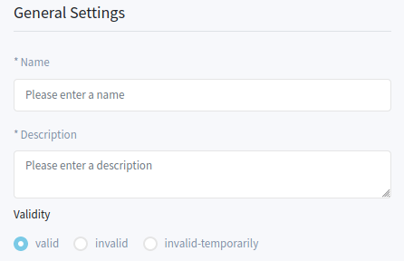
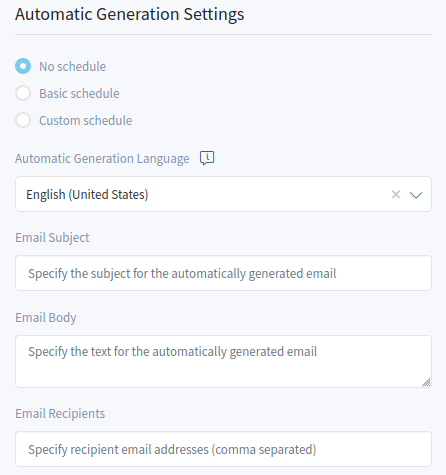
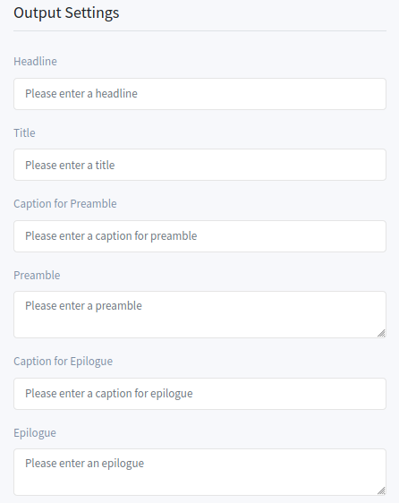
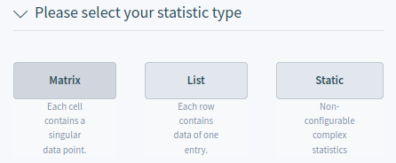
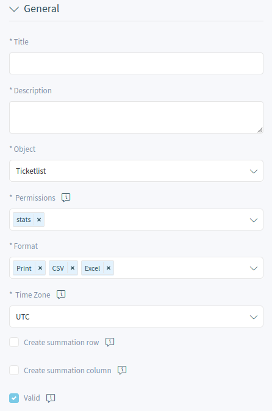
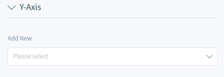
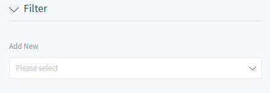

Statistics and Reports¶
This screen acts as a dashboard for statistics and reports. It contains the Report List and the Statistic List widgets.
Reports¶
Reports are automatically generated statistics. In this widget it is possible to set statistics as reports.
Report List Widget
Create Report¶
To create a report:
Click on the + icon in the header of the Report List widget. A new screen will be displayed for the report creation.
Fill in the general information for the report.
General Report Information
- Name
The name of the report.
- Description
Add additional information to this report. It is recommended to always fill this field as a description of the report with a full sentence for better clarity, because the description will be also displayed in the report list.
- Validity
Set the validity of this resource. Each resource can be used in OTRS only, if this field is set to valid. Setting this field to invalid or invalid-temporarily will disable the use of the resource.
Select the automated generation times and fill in the email details.
Automatic Generation Settings
- No schedule
No email will be sent automatically.
- Basic schedule
Select an automatic generation time from the list. The email will be sent in the configured time.
- Custom schedule
Use cron syntax to define custom times for sending the emails.
- Automatic Generation Language
Select a language from the list for the report generation.
- Email Subject
The subject for the email of the report can be added here.
- Email Body
The body text for the email of the report can be added here.
- Email Recipients
The recipients for the email of the report can be added here, separated by commas.
Fill in the output settings.
Output Settings
- Headline
This text will be used as headline text of the report.
- Title
The title of the report.
- Caption for Preamble
The caption for preamble included in the report.
- Preamble
The preamble text of the report.
- Caption for Epilogue
The caption for epilogue included in the report.
- Epilogue
The epilogue text of the report.
Select one or more Statistics to be added to the report. Each added statistics have an own overview and settings screen.
After all information is collected and set, click on the Create Report button to create the report.
Edit Report¶
The edit report screen is the same as the create report screen, but the fields are pre-filled with the current values.
To edit a report:
- Select a report in the Report List widget.
- Modify the fields.
- Click on the Save or Save and Finish button.
Run Report¶
To run a report immediately:
- Click on the play icon in the Run column.
- Click on the Run Report button in the new screen.
Delete Report¶
To delete a report:
- Click on the trash icon in the Delete column.
- Click on the Yes button in the confirmation dialog.
Statistics¶
OTRS comes with some pre-installed statistics. The list of statistics can be found in the Statistics List widget.
Statistic List Widget
Create Statistic¶
Creating a new statistic requires some steps.
Click on the + icon in the header of the Statistics List widget. A new screen will be displayed for the statistic creation.
Select the statistic type. The statistic can be Matrix, List or Static.
Statistic Type Selection
- Matrix: Each cell contains a singular data point.
- List: Each row contains data of one entity.
- Static: Non-configurable complex statistics.
Fill in the general information for the statistic.
General Statistic Information
- Title
Add a title for the statistic.
- Description
Longer description about the statistic.
- Object
Select an object from the list. The available objects depend on the statistic type.
- Permissions
You can select one or more groups to define access for different agents.
- Format
Select the formats, that will be available when the statistic is run.
- Time Zone
Select a time zone for the generated statistic. The selected time periods in the statistic are time zone neutral.
This field is not available for static statistics.
- Create summation row
If this is checked, an additional row is generated containing sums for all data rows.
- Create summation column
If this is checked, an additional column is generated containing sums for all data columns.
- Valid
If this is not checked end users can not generate the statistic.
Click on the Generate Statistic button. The screen will be refreshed, the previous widgets are collapsed, and new widgets are displayed.
Select the values for the X-axis.
Configure X-Axis
It is possible to allow changes to element values before running the statistic by checking the checkbox below the list.
The available values depend on the the statistic type.
Select the values for the Y-axis.
Configure Y-Axis
It is possible to allow changes to element values before running the statistic by checking the checkbox below the list.
The available values depend on the the statistic type.
Select the filters for the data.
Add Filters
Click on the Save and Close button.
During the statistic creation, a preview widget shows the results.
Statistic Preview Widget
Note
The preview uses random data and does not consider data filters.
Edit Statistic¶
The edit statistic screen is the same as the create statistic screen, but the fields are pre-filled with the current values.
To edit a statistic:
- Select a statistic in the Statistic List widget.
- Modify the fields.
- Click on the Save or Save and Finish button.
Export Statistic¶
To export a statistic:
- Click on the export icon in the Export column.
- Choose a location in your computer to save the
.xmlfile.
Import Statistic¶
To import a statistic:
- Click on the Import button in the header of the Statistics List widget.
- Select a previously exported
.xmlfile. - Modify the fields and the statistics details, if needed.
- Click on the Save or Save and Finish button.
Run Statistic¶
To run a statistic immediately:
- Click on the play icon in the Run column.
- Click on the Run Statistic button in the new screen.
Delete Statistic¶
To delete a statistic:
- Click on the trash icon in the Delete column.
- Click on the Yes button in the confirmation dialog.